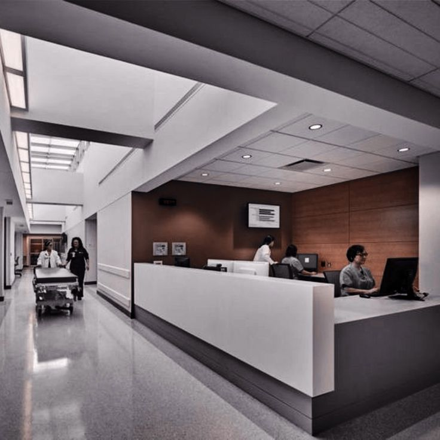

About CAAFI Hospital
CAAFI Hospital, established in 1999, has an exceptional This generated content provides an extended and informative overview of CAAFI Hospital, emphasizing its commitment to quality care, advanced medical technologies, specialized services, patient-centric approach, and dedication to the well-being of its community. Feel free to adjust the text further to better suit the hospital's specific values and offerings. track record in providing outstanding medical services to its patients. We are committed to delivering top-quality healthcare with a focus on patient well-being and satisfaction.
